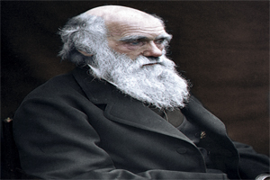

Charles Darwin (1809-1882) foi um renomado naturalista e biólogo britânico, famoso por sua teoria da evolução por seleção natural. Sua obra revolucionária, "A Origem das Espécies", publicada em 1859, propôs que as espécies se transformam ao longo do tempo em resposta às pressões ambientais e à seleção das características mais adaptativas.
Nascido em Shrewsbury, Inglaterra, Darwin desenvolveu um profundo interesse pela natureza desde a infância. Durante sua expedição no HMS Beagle, coletou evidências em várias regiões do mundo, o que o levou a questionar a crença predominante na época de que as espécies eram imutáveis.
Sua teoria da evolução teve um impacto significativo na biologia e em nosso entendimento da diversidade da vida na Terra. Darwin argumentava que as espécies mais aptas a sobreviver e se reproduzir são selecionadas naturalmente, transmitindo suas características favoráveis às gerações seguintes.